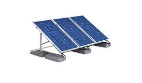

This Website provides data based on your location, the declination and orientation of your solar panels
Solar Production
This Web app provides an always weather based solar production forecast, historic averages and clear sky optimum, providing watt powers and kilo watt energy data.
Weather
The weather forecast provides sky coverage amount, textual weather condition and temperature and some wind information.
Time Windows

You can use this route to determine time windows in which switching processes can be automated based on the forecast.
Chart

A daily solar production forecast chart with simple Javascript snippets.